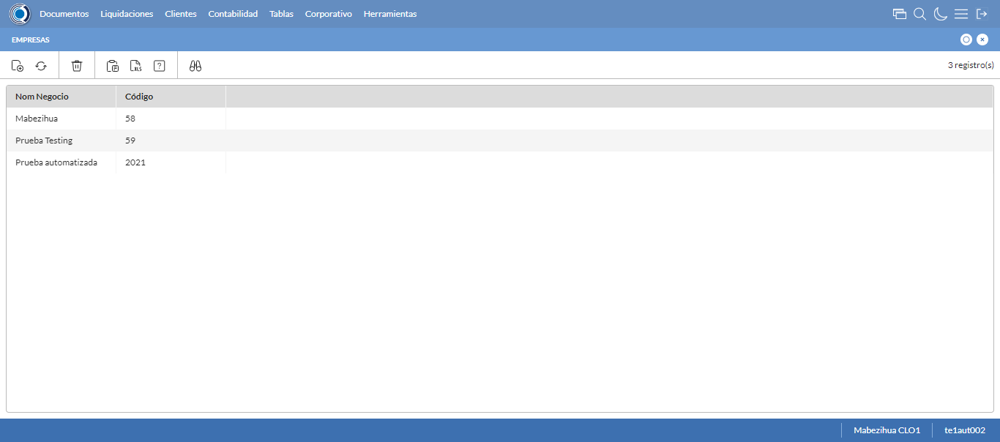
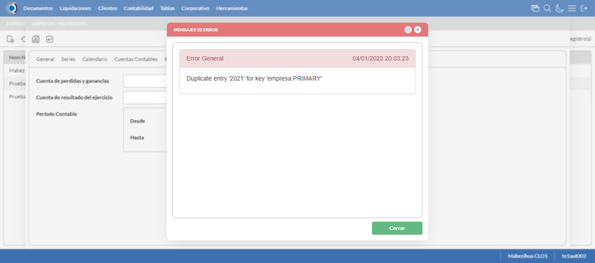
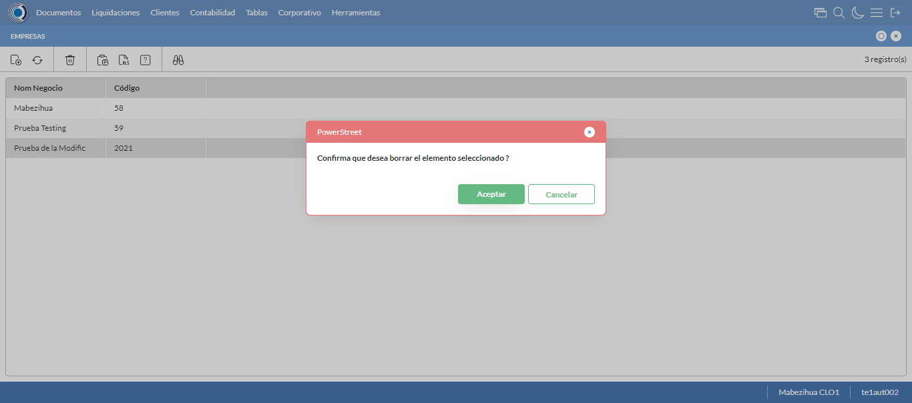

Desarrollado por : Area de Testing PWST
Fecha y hora de inicio : 2023-01-04 14:02:04
Duracion : 0:02:21.266412
Resultado : Total 8，Correctos 7 ，Errores 1 ，Taza de resultado 87.50%
Resumen 87.50% Errores 1 Fallidos 0 Correctos 7 Test realizados 8
| Caso de Prueba | Total | Correctos | Fallido | Error | Detalles | Captura del error |
| Empresas.Test: Escenario 1 de Empresas | 8 | 7 | 0 | 1 | Detalles | |
test |
ft1_1: 2023-01-04 14:02:06,151 - root - INFO - Se abre el chrome
2023-01-04 14:02:08,012 - root - INFO - Entra a la URL
2023-01-04 14:02:08,151 - root - INFO - Maximiza la pantalla
Traceback (most recent call last):
File "C:\Users\gerar\AppData\Local\Programs\Python\Python311\Lib\site-packages\selenium\webdriver\remote\switch_to.py", line 88, in frame
frame_reference = self._driver.find_element(By.ID, frame_reference)
^^^^^^^^^^^^^^^^^^^^^^^^^^^^^^^^^^^^^^^^^^^^^^^^^
File "C:\Users\gerar\AppData\Local\Programs\Python\Python311\Lib\site-packages\selenium\webdriver\remote\webdriver.py", line 861, in find_element
return self.execute(Command.FIND_ELEMENT, {"using": by, "value": value})["value"]
^^^^^^^^^^^^^^^^^^^^^^^^^^^^^^^^^^^^^^^^^^^^^^^^^^^^^^^^^^^^^^^^^
File "C:\Users\gerar\AppData\Local\Programs\Python\Python311\Lib\site-packages\selenium\webdriver\remote\webdriver.py", line 444, in execute
self.error_handler.check_response(response)
File "C:\Users\gerar\AppData\Local\Programs\Python\Python311\Lib\site-packages\selenium\webdriver\remote\errorhandler.py", line 249, in check_response
raise exception_class(message, screen, stacktrace)
selenium.common.exceptions.NoSuchElementException: Message: no such element: Unable to locate element: {"method":"css selector","selector":"[id="mainFrame"]"}
(Session info: chrome=108.0.5359.125)
Stacktrace:
Backtrace:
(No symbol) [0x0063F243]
(No symbol) [0x005C7FD1]
(No symbol) [0x004BD04D]
(No symbol) [0x004EC0B0]
(No symbol) [0x004EC22B]
(No symbol) [0x0051E612]
(No symbol) [0x005085D4]
(No symbol) [0x0051C9EB]
(No symbol) [0x00508386]
(No symbol) [0x004E163C]
(No symbol) [0x004E269D]
GetHandleVerifier [0x008D9A22+2655074]
GetHandleVerifier [0x008CCA24+2601828]
GetHandleVerifier [0x006E8C0A+619850]
GetHandleVerifier [0x006E7830+614768]
(No symbol) [0x005D05FC]
(No symbol) [0x005D5968]
(No symbol) [0x005D5A55]
(No symbol) [0x005E051B]
BaseThreadInitThunk [0x76347D69+25]
RtlInitializeExceptionChain [0x7731BB9B+107]
RtlClearBits [0x7731BB1F+191]
During handling of the above exception, another exception occurred:
Traceback (most recent call last):
File "C:\Users\gerar\AppData\Local\Programs\Python\Python311\Lib\site-packages\selenium\webdriver\remote\switch_to.py", line 91, in frame
frame_reference = self._driver.find_element(By.NAME, frame_reference)
^^^^^^^^^^^^^^^^^^^^^^^^^^^^^^^^^^^^^^^^^^^^^^^^^^^
File "C:\Users\gerar\AppData\Local\Programs\Python\Python311\Lib\site-packages\selenium\webdriver\remote\webdriver.py", line 861, in find_element
return self.execute(Command.FIND_ELEMENT, {"using": by, "value": value})["value"]
^^^^^^^^^^^^^^^^^^^^^^^^^^^^^^^^^^^^^^^^^^^^^^^^^^^^^^^^^^^^^^^^^
File "C:\Users\gerar\AppData\Local\Programs\Python\Python311\Lib\site-packages\selenium\webdriver\remote\webdriver.py", line 444, in execute
self.error_handler.check_response(response)
File "C:\Users\gerar\AppData\Local\Programs\Python\Python311\Lib\site-packages\selenium\webdriver\remote\errorhandler.py", line 249, in check_response
raise exception_class(message, screen, stacktrace)
selenium.common.exceptions.NoSuchElementException: Message: no such element: Unable to locate element: {"method":"css selector","selector":"[name="mainFrame"]"}
(Session info: chrome=108.0.5359.125)
Stacktrace:
Backtrace:
(No symbol) [0x0063F243]
(No symbol) [0x005C7FD1]
(No symbol) [0x004BD04D]
(No symbol) [0x004EC0B0]
(No symbol) [0x004EC22B]
(No symbol) [0x0051E612]
(No symbol) [0x005085D4]
(No symbol) [0x0051C9EB]
(No symbol) [0x00508386]
(No symbol) [0x004E163C]
(No symbol) [0x004E269D]
GetHandleVerifier [0x008D9A22+2655074]
GetHandleVerifier [0x008CCA24+2601828]
GetHandleVerifier [0x006E8C0A+619850]
GetHandleVerifier [0x006E7830+614768]
(No symbol) [0x005D05FC]
(No symbol) [0x005D5968]
(No symbol) [0x005D5A55]
(No symbol) [0x005E051B]
BaseThreadInitThunk [0x76347D69+25]
RtlInitializeExceptionChain [0x7731BB9B+107]
RtlClearBits [0x7731BB1F+191]
During handling of the above exception, another exception occurred:
Traceback (most recent call last):
File "C:\xampp\htdocs\versiones\automatizaciones\AutoPWST\01EMP\testCase\Empresas.py", line 30, in test
self.driver.switch_to.frame("mainFrame")
File "C:\Users\gerar\AppData\Local\Programs\Python\Python311\Lib\site-packages\selenium\webdriver\remote\switch_to.py", line 93, in frame
raise NoSuchFrameException(frame_reference)
selenium.common.exceptions.NoSuchFrameException: Message: mainFrame
|
|
||||
test_000: Ingresa a la base de datos |
pt1_2: 2023-01-04 14:02:11,244 - root - INFO - Escribe el usuario
2023-01-04 14:02:11,319 - root - INFO - Escribe la contraseña
2023-01-04 14:02:11,381 - root - INFO - Se dio clic en el boton ingresar
2023-01-04 14:02:13,628 - root - INFO - Ejecutar Enterprise
2023-01-04 14:02:17,673 - root - INFO - Cambia entre pestañas
|
|
||||
test_001: Abre menu y ejecuta pantalla |
pt1_3: 2023-01-04 14:02:32,677 - root - INFO - Abre la pantalla de Empresas
2023-01-04 14:02:33,733 - root - INFO - La pantalla ejecutada es Empresas
2023-01-04 14:02:33,734 - root - INFO - Captura: C:\xampp\htdocs\versiones\automatizaciones\AutoPWST\01EMP\report\img screen：20230104_14_02_33.png
2023-01-04 14:02:34,374 - root - INFO - Se da clic en el registro creado, para proceder a eliminarlo.
2023-01-04 14:02:35,455 - root - INFO - Se hace el cambio a la pestaña Resoluciones Fiscales para continuar con la eliminación del registro
2023-01-04 14:02:36,026 - root - INFO - Se da clic en el registro creado, para proceder a eliminarlo.
2023-01-04 14:02:36,075 - root - INFO - Se hace el cambio a la pestaña Series para continuar con la eliminación del registro
2023-01-04 14:02:37,171 - root - INFO - Se da doble click en el registro de series, para proceder a eliminarlo.
2023-01-04 14:02:37,728 - root - INFO - Se hace el cambio a la pestaña Coniguración Vias para continuar con la eliminación del registro
2023-01-04 14:02:39,325 - root - INFO - Se da clic en el registro de Configuración Vías, para proceder a modificarlo.
2023-01-04 14:02:39,379 - root - INFO - Se presiona el boton 'Eliminar', para eliminar el registro de Configuración Vías.
2023-01-04 14:02:40,081 - root - INFO - Se da clic en el boton Guardar; se debe modificar la informacion del registro Series.
2023-01-04 14:02:42,140 - root - INFO - Se da clic en el boton Guardar; se debe modificar la informacion del registro.
2023-01-04 14:02:44,716 - root - INFO - Se da clic en el registro creado, para proceder a eliminarlo.
2023-01-04 14:02:45,800 - root - INFO - Se hace el cambio a la pestaña Series para continuar con la eliminación del registro
2023-01-04 14:02:46,881 - root - INFO - Se da clic en el registro series, para proceder a eliminarlo.
2023-01-04 14:02:46,931 - root - INFO - Se presiona el boton 'Eliminar', para eliminar el registro de Series.
2023-01-04 14:02:47,120 - root - INFO - Se da clic en el boton Guardar; se debe modificar la informacion del registro.
2023-01-04 14:02:49,682 - root - INFO - Se da clic en el registro creado, para proceder a eliminarlo.
2023-01-04 14:02:49,728 - root - INFO - Se presiona el boton 'Eliminar', para eliminar el registro.
2023-01-04 14:02:50,289 - root - INFO - Se confirma el eliminado del registro
2023-01-04 14:02:50,773 - root - INFO - Se presiona el boton 'Refrescar', para crear un nuevo registro igual al anterior.
2023-01-04 14:02:52,825 - root - INFO - Se presiona el boton 'Nuevo', para crear un nuevo registro.
|
 | ||||
test_002: Abre la ventana de nuevo y crear un registro |
pt1_4: 2023-01-04 14:02:53,876 - root - INFO - Se abrio la pantalla para el ingreso de un registro nuevo.
2023-01-04 14:02:53,938 - root - INFO - Ingresa el codigo del nuevo registro
2023-01-04 14:02:54,081 - root - INFO - Ingresa la descripción del nuevo registro
2023-01-04 14:02:54,150 - root - INFO - Ingresa el codigo alternativo del nuevo registro
2023-01-04 14:02:54,216 - root - INFO - Ingresa el codigo GLN del nuevo registro
2023-01-04 14:02:54,290 - root - INFO - Ingresa la Razón Social del nuevo registro
2023-01-04 14:02:54,381 - root - INFO - Ingresa la calle del nuevo registro
2023-01-04 14:02:54,450 - root - INFO - Ingresa la esquina 1 del nuevo registro
2023-01-04 14:02:54,523 - root - INFO - Ingresa la esquina 2 del nuevo registro
2023-01-04 14:02:54,588 - root - INFO - Ingresa el Telefono 1 del nuevo registro
2023-01-04 14:02:54,648 - root - INFO - Ingresa el Telefono 2 del nuevo registro
2023-01-04 14:02:54,713 - root - INFO - Ingresa el ruc del nuevo registro
2023-01-04 14:02:55,626 - root - INFO - Se dió doble click en el registro de Estado.
2023-01-04 14:02:56,900 - root - INFO - Se dió doble click en el registro de Depto/Provincia.
2023-01-04 14:02:58,030 - root - INFO - Se dió doble click en el registro de Localidad.
2023-01-04 14:03:01,130 - root - INFO - Se dió doble click en el registro de Barrio.
2023-01-04 14:03:01,266 - root - INFO - Ingresa las Observaciones del nuevo registro
2023-01-04 14:03:01,312 - root - INFO - Se dió click en el checkbox Resoluciones Fiscales.
2023-01-04 14:03:01,313 - root - INFO - Captura: C:\xampp\htdocs\versiones\automatizaciones\AutoPWST\01EMP\report\img screen：20230104_14_03_01.png
2023-01-04 14:03:01,472 - root - INFO - Ingresa el Num de la puerta del nuevo registro
2023-01-04 14:03:01,517 - root - INFO - Se hace el cambio a la pestaña Series para continuar con el registro nuevo
2023-01-04 14:03:02,071 - root - INFO - Se presiona el boton 'Nuevo', para crear un nuevo registro de Series.
2023-01-04 14:03:02,647 - root - INFO - Ingresa el Codigo del nuevo registro
2023-01-04 14:03:02,744 - root - INFO - Ingresa la Descripcion del nuevo registro
2023-01-04 14:03:02,840 - root - INFO - Ingresa el Codigo alternativo del nuevo registro
2023-01-04 14:03:02,890 - root - INFO - Se hace el cambio a la pestaña Configuración Vias para continuar con el registro nuevo
2023-01-04 14:03:03,464 - root - INFO - Se presiona el boton 'Nuevo', para crear un nuevo registro de Configuración Vias.
2023-01-04 14:03:04,067 - root - INFO - Ingresa el Tipo Documento del nuevo registro
2023-01-04 14:03:04,153 - root - INFO - Ingresa las Vias Backoffice del nuevo registro
2023-01-04 14:03:04,258 - root - INFO - Ingresa las Vias Mobile del nuevo registro
2023-01-04 14:03:04,337 - root - INFO - Ingresa la Descripción Vias del nuevo registro
2023-01-04 14:03:04,600 - root - INFO - Se presiona el boton 'Guardar', para guardar el registro de Configuracion Vias .
2023-01-04 14:03:06,656 - root - INFO - Se presiona el boton 'Guardar', para guardar el registro de Serie.
2023-01-04 14:03:08,703 - root - INFO - Se hace el cambio a la pestaña Calendario para continuar con el registro nuevo
2023-01-04 14:03:09,789 - root - INFO - Se dió click en el checkbox Lunes.
2023-01-04 14:03:09,841 - root - INFO - Se dió click en el checkbox Martes.
2023-01-04 14:03:09,894 - root - INFO - Se dió click en el checkbox Miercoles.
2023-01-04 14:03:09,948 - root - INFO - Se dió click en el checkbox Jueves.
2023-01-04 14:03:10,009 - root - INFO - Se dió click en el checkbox Viernes.
2023-01-04 14:03:10,061 - root - INFO - Se dió click en el checkbox Sabado.
2023-01-04 14:03:10,123 - root - INFO - Se hace el cambio a la pestaña Contabilidad para continuar con el registro nuevo
2023-01-04 14:03:10,749 - root - INFO - Ingresa la fecha Desde del nuevo registro
2023-01-04 14:03:10,851 - root - INFO - Ingresa la fecha Hasta del nuevo registro
2023-01-04 14:03:10,904 - root - INFO - Se da clic en el boton Guardar; se debe crear un nuevo registro.
|

|
||||
test_003: Repetir el registro creado anteriormente |
pt1_5: 2023-01-04 14:03:12,957 - root - INFO - Se presiona el boton 'Refrescar', para crear un nuevo registro igual al anterior.
2023-01-04 14:03:15,009 - root - INFO - Se presiona el boton 'Nuevo', para crear un nuevo registro igual al anterior.
2023-01-04 14:03:16,056 - root - INFO - Se abrio la pantalla para el ingreso de un registro nuevo.
2023-01-04 14:03:16,124 - root - INFO - Ingresa el codigo del nuevo registro
2023-01-04 14:03:16,261 - root - INFO - Ingresa la descripción del nuevo registro
2023-01-04 14:03:16,339 - root - INFO - Ingresa el codigo alternativo del nuevo registro
2023-01-04 14:03:16,404 - root - INFO - Ingresa el codigo GLN del nuevo registro
2023-01-04 14:03:16,479 - root - INFO - Ingresa la Razón Social del nuevo registro
2023-01-04 14:03:16,558 - root - INFO - Ingresa la calle del nuevo registro
2023-01-04 14:03:16,630 - root - INFO - Ingresa la esquina 1 del nuevo registro
2023-01-04 14:03:16,702 - root - INFO - Ingresa la esquina 2 del nuevo registro
2023-01-04 14:03:16,767 - root - INFO - Ingresa el Telefono 1 del nuevo registro
2023-01-04 14:03:16,827 - root - INFO - Ingresa el Telefono 2 del nuevo registro
2023-01-04 14:03:16,891 - root - INFO - Ingresa el ruc del nuevo registro
2023-01-04 14:03:18,286 - root - INFO - Se dió doble click en el registro de Estado.
2023-01-04 14:03:19,485 - root - INFO - Se dió doble click en el registro de Depto/Provincia.
2023-01-04 14:03:20,607 - root - INFO - Se dió doble click en el registro de Localidad.
2023-01-04 14:03:21,946 - root - INFO - Se dió doble click en el registro de Barrio.
2023-01-04 14:03:22,152 - root - INFO - Ingresa las Observaciones del nuevo registro
2023-01-04 14:03:22,295 - root - INFO - Se dió click en el checkbox Resoluciones Fiscales.
2023-01-04 14:03:22,371 - root - INFO - Ingresa el Num de la puerta del nuevo registro
2023-01-04 14:03:22,417 - root - INFO - Se hace el cambio a la pestaña Contabilidad para continuar con el registro nuevo
2023-01-04 14:03:23,034 - root - INFO - Ingresa la fecha Desde del nuevo registro
2023-01-04 14:03:23,132 - root - INFO - Ingresa la fecha Hasta del nuevo registro
2023-01-04 14:03:23,198 - root - INFO - Se da clic en el boton Guardar; NO se debe crear un nuevo registro.
2023-01-04 14:03:23,767 - root - INFO - Se da clic en el boton del mensaje de registro duplicado
2023-01-04 14:03:25,768 - root - INFO - Captura: C:\xampp\htdocs\versiones\automatizaciones\AutoPWST\01EMP\report\img screen：20230104_14_03_25.png
2023-01-04 14:03:25,939 - root - INFO - Se presiona el boton 'Cerrar', para cerrar el mensaje de duplicidad de llave primaria
2023-01-04 14:03:26,051 - root - INFO - Se presiona el boton 'Cerrar', para cerrar la ventana
|
 | ||||
test_004: Modificar el registro |
pt1_6: 2023-01-04 14:03:26,163 - root - INFO - Se presiona el boton 'Refrescar', para proceder a modificar el registro.
2023-01-04 14:03:28,736 - root - INFO - Se da clic en el registro creado, para proceder a modificarlo.
2023-01-04 14:03:29,924 - root - INFO - Se modifica el contenido del campo Descripción
2023-01-04 14:03:30,046 - root - INFO - Se modifica el contenido del campo Codigo Alternativo
2023-01-04 14:03:30,154 - root - INFO - Se modifica el contenido del campo Codigo GLN
2023-01-04 14:03:30,299 - root - INFO - Se modifica el contenido del campo Razón Social
2023-01-04 14:03:30,406 - root - INFO - Se modifica el contenido del campo Calle
2023-01-04 14:03:30,500 - root - INFO - Se modifica el contenido del campo Esquina 1
2023-01-04 14:03:30,591 - root - INFO - Se modifica el contenido del campo Esquina 2
2023-01-04 14:03:30,674 - root - INFO - Se modifica el contenido del campo telefono 1
2023-01-04 14:03:30,754 - root - INFO - Se modifica el contenido del campo telefono 2
2023-01-04 14:03:30,863 - root - INFO - Se modifica el contenido del campo RUC
2023-01-04 14:03:32,252 - root - INFO - Se dió doble click en el registro de Estado.
2023-01-04 14:03:34,318 - root - INFO - Se dió doble click en el registro de Depto/Provincia.
2023-01-04 14:03:36,001 - root - INFO - Se dió doble click en el registro de Localidad.
2023-01-04 14:03:37,078 - root - INFO - Se dió doble click en el registro de Barrio.
2023-01-04 14:03:37,385 - root - INFO - Se modifica el contenido del campo Observaciones
2023-01-04 14:03:37,636 - root - INFO - Se dió click en el checkbox Resoluciones Fiscales.
2023-01-04 14:03:37,637 - root - INFO - Captura: C:\xampp\htdocs\versiones\automatizaciones\AutoPWST\01EMP\report\img screen：20230104_14_03_37.png
2023-01-04 14:03:37,854 - root - INFO - Se modifica el contenido del campo Num de Puerta
2023-01-04 14:03:37,900 - root - INFO - Se hace el cambio a la pestaña Series para continuar con la modificación del registro
2023-01-04 14:03:38,986 - root - INFO - Se da clic en el registro de Series, para proceder a modificarlo.
2023-01-04 14:03:39,739 - root - INFO - Se modifica el contenido del campo Descripción
2023-01-04 14:03:39,833 - root - INFO - Se modifica el contenido del campo Codigo Alternativo
2023-01-04 14:03:39,878 - root - INFO - Se hace el cambio a la pestaña Configuración de Vías para continuar con la modificación del registro
2023-01-04 14:03:40,978 - root - INFO - Se da clic en el registro de Configuración Vías, para proceder a modificarlo.
2023-01-04 14:03:41,647 - root - INFO - Se modifica el contenido del campo Tipo Documento
2023-01-04 14:03:41,783 - root - INFO - Se modifica el contenido del campo Vías Backoffice
2023-01-04 14:03:41,884 - root - INFO - Se modifica el contenido del campo Vías Mobile
2023-01-04 14:03:42,097 - root - INFO - Se modifica el contenido del campo Descripción
2023-01-04 14:03:42,234 - root - INFO - Se presiona el boton 'Guardar', para guardar la modificación del registro de Configuración Vías.
2023-01-04 14:03:44,292 - root - INFO - Se presiona el boton 'Guardar', para guardar la modificación del registro Series.
2023-01-04 14:03:46,349 - root - INFO - Se hace el cambio a la pestaña Calendario para continuar con la modificación del registro
2023-01-04 14:03:47,429 - root - INFO - Se dió click en el checkbox Lunes.
2023-01-04 14:03:47,481 - root - INFO - Se dió click en el checkbox Miercoles.
2023-01-04 14:03:47,532 - root - INFO - Se dió click en el checkbox Sabado.
2023-01-04 14:03:47,579 - root - INFO - Se hace el cambio a la pestaña Resoluciones Fiscales para continuar con la modificación del registro
2023-01-04 14:03:48,146 - root - INFO - Se presiona el boton 'Nuevo', para crear un nuevo registro de Resoluciones Fiscales.
2023-01-04 14:03:49,567 - root - INFO - Se dió doble click en el registro de Serie.
2023-01-04 14:03:49,762 - root - INFO - Ingresa el Num de la puerta del nuevo registro
2023-01-04 14:03:49,892 - root - INFO - Ingresa el Rango Inicio del nuevo registro
2023-01-04 14:03:49,983 - root - INFO - Ingresa el Rango Fin del nuevo registro
2023-01-04 14:03:50,038 - root - INFO - Se da clic en el boton Guardar; se debe guardar el registro de Resolución Fiscal.
2023-01-04 14:03:52,096 - root - INFO - Se da clic en el boton Guardar; se debe modificar la informacion del registro.
|

|
||||
test_005: Eliminar el registro creado |
pt1_7: 2023-01-04 14:03:54,148 - root - INFO - Se presiona el boton 'Refrescar', para proceder a eliminar el registro.
2023-01-04 14:03:56,721 - root - INFO - Se da clic en el registro creado, para proceder a eliminarlo.
2023-01-04 14:03:58,298 - root - INFO - Se hace el cambio a la pestaña Resoluciones Fiscales para continuar con la eliminación del registro
2023-01-04 14:03:59,367 - root - INFO - Se da clic en el registro en el Registro de Resoluciones Fiscales, para proceder a modificarlo.
2023-01-04 14:03:59,416 - root - INFO - Se presiona el boton 'Eliminar', para eliminar el registro de Resoluciones Fiscales.
2023-01-04 14:03:59,600 - root - INFO - Se da clic en el boton Guardar; se debe modificar la informacion del registro.
2023-01-04 14:04:02,175 - root - INFO - Se da clic en el registro creado, para proceder a eliminarlo.
2023-01-04 14:04:03,241 - root - INFO - Se hace el cambio a la pestaña Series para continuar con la eliminación del registro
2023-01-04 14:04:04,313 - root - INFO - Se da doble click en el registro de series, para proceder a eliminarlo.
2023-01-04 14:04:04,873 - root - INFO - Se hace el cambio a la pestaña Coniguración Vias para continuar con la eliminación del registro
2023-01-04 14:04:05,943 - root - INFO - Se da clic en el registro de Configuración Vías, para proceder a modificarlo.
2023-01-04 14:04:06,001 - root - INFO - Se presiona el boton 'Eliminar', para eliminar el registro de Configuración Vías.
2023-01-04 14:04:06,143 - root - INFO - Se da clic en el boton Guardar; se debe modificar la informacion del registro Series.
2023-01-04 14:04:08,200 - root - INFO - Se da clic en el boton Guardar; se debe modificar la informacion del registro.
2023-01-04 14:04:10,787 - root - INFO - Se da clic en el registro creado, para proceder a eliminarlo.
2023-01-04 14:04:12,361 - root - INFO - Se hace el cambio a la pestaña Series para continuar con la eliminación del registro
2023-01-04 14:04:13,936 - root - INFO - Se da clic en el registro series, para proceder a eliminarlo.
2023-01-04 14:04:13,988 - root - INFO - Se presiona el boton 'Eliminar', para eliminar el registro de Series.
2023-01-04 14:04:14,102 - root - INFO - Se da clic en el boton Guardar; se debe modificar la informacion del registro.
2023-01-04 14:04:16,675 - root - INFO - Se da clic en el registro creado, para proceder a eliminarlo.
2023-01-04 14:04:16,726 - root - INFO - Se presiona el boton 'Eliminar', para eliminar el registro.
2023-01-04 14:04:18,728 - root - INFO - Captura: C:\xampp\htdocs\versiones\automatizaciones\AutoPWST\01EMP\report\img screen：20230104_14_04_18.png
2023-01-04 14:04:18,862 - root - INFO - Se confirma el eliminado del registro
2023-01-04 14:04:19,089 - root - INFO - Se presiona el boton 'Refrescar', para verificar si el registro ha sido eliminado.
2023-01-04 14:04:21,141 - root - INFO - Se presiona el boton 'Cerrar', para cerrar la pantalla de Empresas.
|
 | ||||
test_006: Cerrar_Navegador |
pt1_8: 2023-01-04 14:04:25,628 - root - INFO - Se cierra chrome
|
|
||||
| Caso de prueba | 8 | 7 | 0 | 1 | Taza de resultado：87.50% | |